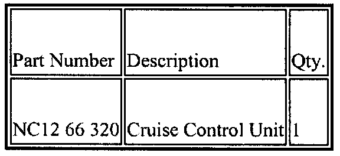
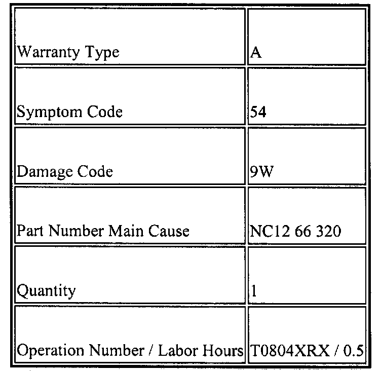

Cruise Control - Speed Fluctuation
M01-004/991999 Miata - FLUCTUATION IN CRUISE CONTROL SET SPEED
APPLICABLE MODELS
All 1999 Miata with VINs lower than JM1 NB35** X0122015.
DESCRIPTION
During the auto cruise control function, any of the following problems may occur:
^ Vehicle speed fluctuation
^ Cruising speed is 5-7 m.p.h. higher than the set speed
^ Coast function (deceleration system) becomes inoperative
These symptoms may be caused by a transistor malfunction inside the cruise control unit. A modified part with a heavy duty transistor is available to resolve this concern.
Customers complaining of this concern should have their vehicle repaired using the following procedure.
REPAIR PROCEDURE
1. Verify customer complaint.
2. Measure the battery voltage and note it on the repair order.
3. Turn the ignition switch ON, then turn the cruise control main switch ON.
4. Measure voltage of cruise control module at terminal "A" (G/Y wire) Refer to Section 01-20 of the Workshop Manual.
^ If voltage at terminal "A" is at least 1.0V lower than the battery voltage measured in Step 2, replace cruise control module with modified part.
^ If voltage difference between battery and terminal "A" is within 1.0 V, cruise control unit has no problem.
5. Verify repair.

PARTS INFORMATION

WARRANTY INFORMATION
This information applies to verified customer complaints on vehicles covered under normal warranty. Refer to the SRT microfiche for warranty term information.

Disclaimer